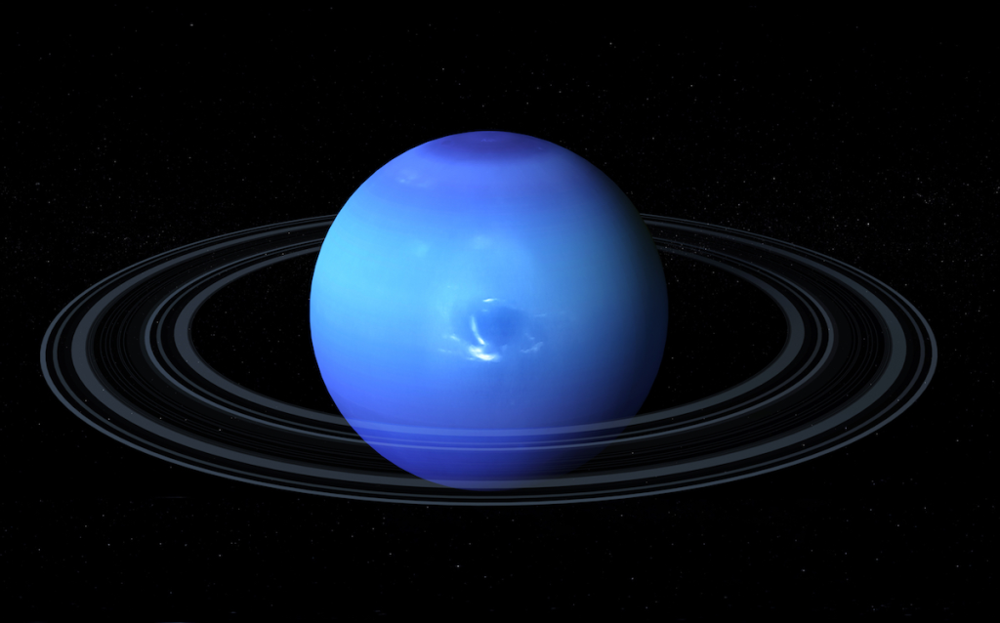

Neptune is the eighth and farthest planet from the Sun. It is known for its deep blue color and extremely strong winds.
Neptune has a diameter of about 49,244 km. It experiences the fastest winds in the solar system. The planet appears deep blue because of methane in its atmosphere.
Neptune has several internal layers.
Neptune has a thick and dynamic atmosphere.
Neptune is famous for its strong storms and high-speed winds. The Great Dark Spot was a massive storm discovered by spacecraft. Neptune also has several moons, with Triton being the largest and most studied.
1.introduction of neptune? clickhere
2.structure of neptune? clickhere
3.Atmosphere of neptune? clickhere
4.Storms and moons of neptune? clickhere